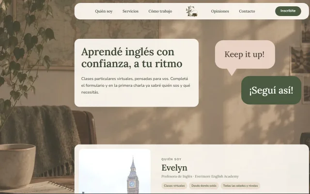
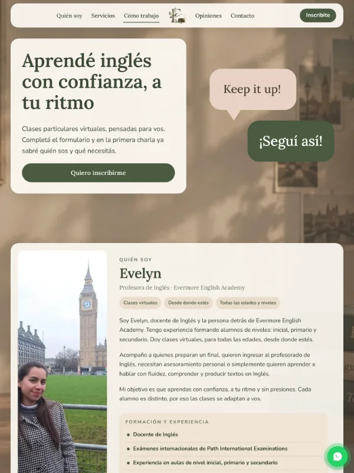
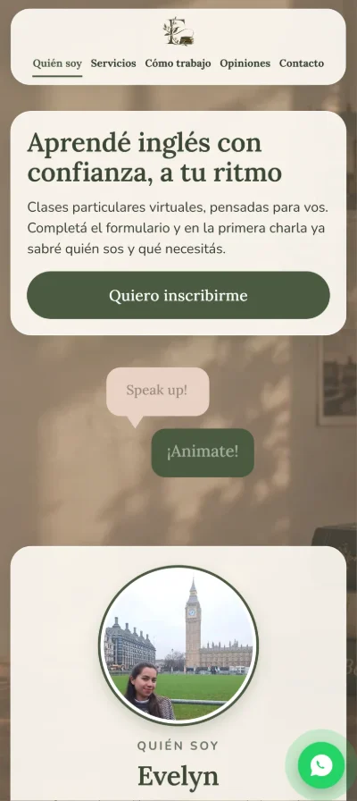

Diseño · Desarrollo · Seguridad
Todo lo que imaginás, se puede crear.
Diseño y desarrollo sitios web a medida, combinando identidad visual, funcionalidad y tecnología para transformar ideas en experiencias digitales.
Cada idea tiene una forma. Cada detalle, un propósito.
Servicios
Cada idea necesita su propia forma.
Diseño y desarrollo sitios web a medida para profesionales, emprendimientos y marcas que quieren presentarse en internet con una identidad propia. Cada proyecto se arma según lo que necesitás comunicar.
Qué puedo crear
- Sitios de presentación para profesionales y emprendimientos
- Páginas para dar a conocer un servicio, un producto o una propuesta
- Sitios de varias secciones, con toda la información de tu proyecto
- Sitios con formularios de contacto, consulta o inscripción
Qué incluye cada sitio
- Diseño web con identidad propia
- Desarrollo de sitios web a medida
- Experiencias adaptadas a celulares, tablets y computadoras
- Código organizado y mantenible
- Buenas prácticas de seguridad
Qué se puede sumar
- Interacciones y elementos dinámicos
- Formularios por etapas, con envío de la información al correo
- Canales de contacto directos por WhatsApp y correo
- Versiones del sitio en más de un idioma
Seguridad
La confianza también se construye desde adentro.
Una buena experiencia digital no termina en lo que se ve. También importa cómo está construido cada sitio. Por eso, la seguridad y las buenas prácticas forman parte del desarrollo desde el primer momento.
- Buenas prácticas de desarrollo seguro
- Validación de datos y protección de formularios
- Medidas para reducir envíos automatizados no deseados
- Conexiones seguras mediante HTTPS
Proceso
De una idea
a hacerla realidad.
Cada proyecto tiene su propio recorrido. Trabajo en cada etapa para transformar una idea inicial en una experiencia digital funcional y con identidad propia.
- Conversación Conocer tu idea y entender qué necesitás.
- Diseño Definir la identidad visual y la estructura.
- Desarrollo Convertir el diseño en un sitio funcional.
- Lanzamiento Revisar los detalles y poner el proyecto en línea.
- Acompañamiento Asistencia y mantenimiento posterior, a coordinar según cada proyecto.
Proyecto destacado
Las ideas también se convierten en experiencias.
Evermore English Academy es un proyecto real: el sitio web que desarrollé para una profesora de inglés que da clases particulares virtuales.
- Diseño
- Desarrollo
- Formularios
- Seguridad



- La necesidad
- Presentar su propuesta educativa con una identidad visual propia y recibir inscripciones a sus clases.
- La solución
- Un sitio a medida que presenta a la profesora, sus clases y su forma de trabajo, con un formulario de inscripción dividido en cuatro etapas y envío de la información directamente al correo electrónico.
- Funcionalidades
- Datos de un adulto responsable cuando quien se inscribe es menor de edad, consentimientos, confirmación con resumen por WhatsApp y una sección de opiniones que se revisan antes de publicarse.
- El valor
- Quien visita el sitio conoce la propuesta y puede inscribirse en un solo lugar, y la profesora recibe cada inscripción con la información que necesita para organizar las clases.

Quién soy
Detrás de cada proyecto, una persona.
Mi nombre es Francisco y soy quien está detrás de KHARV. Me dedico al diseño y desarrollo web, creando experiencias digitales que combinan estética, funcionalidad y tecnología.
Actualmente estudio la Tecnicatura Universitaria en Programación en la UTN y complemento mi formación con capacitaciones en EducaciónIT.
Trabajo personalmente en cada proyecto, cuidando cada etapa del proceso para convertir ideas en sitios web pensados para cada necesidad.
- Formación continua
- Desarrollo a medida
- Atención personalizada
Preguntas frecuentes
Antes de empezar, algunas respuestas.
¿Cómo comienza un proyecto?
Con una conversación por WhatsApp o por correo. Me contás tu idea, qué necesitás y para qué es el sitio, y a partir de ahí vemos cómo darle forma.
¿Qué necesito para solicitar una página web?
Alcanza con tener una idea de lo que querés comunicar. Si ya tenés logo, textos o fotos, suman; si todavía no, lo hablamos en la primera conversación.
¿El sitio se adapta a celulares?
Sí. Cada sitio se diseña y se adapta para verse y funcionar bien en celulares, tablets y computadoras.
¿Puedo tener mi propio dominio?
Sí. El sitio puede publicarse con un dominio propio, por ejemplo tumarca.com. Lo coordinamos en la etapa de lanzamiento.
¿Puedo solicitar modificaciones después de la entrega?
Sí. Podés escribirme para pedir cambios o ajustes. El alcance de cada modificación se conversa según el caso.
Diseño · Desarrollo · Seguridad
¿Qué imaginás crear?
Toda gran idea empieza con una conversación. Contame qué tenés en mente y empecemos a darle forma.